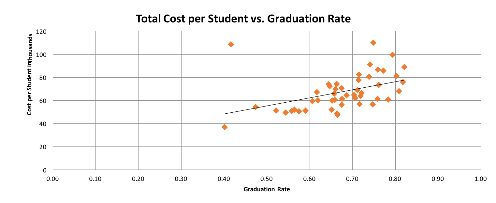
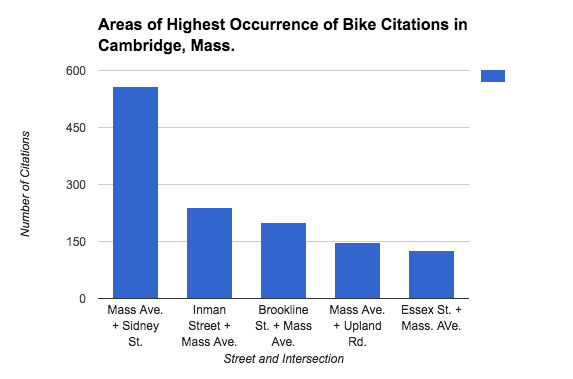

MICHELLE CHENG
About
Stories
Résumé
Selected Writings
Performing a Magazine Live on Stage, Literally
,
THE QUAD
.
Attracting More Women To Study STEM In A World Full of Geek Dude Stereotypes
,
FORBES
.
Degree vs. School: Which Helped This College Junior Land Internships At Google and Microsoft?
FORBES
.
The Writing Barrier for Chinese International Students at a U.S University
,
THE QUAD
.
Western Journalists Take On K-Pop Phenomenon
,
THE QUAD
.
Why One Silicon Valley Designer Left Pinterest and Dropbox to Go Solo
,
MOCHI MAGAZINE
.
A Safe Haven For Domestic Violence Victims
,
NEW YORK FAMILY
.
5 Things To Do Right Now At The Rubin Museum
,
NEW YORK FAMILY
.
Low-Income Students at a Big, Expensive School
,
THE QUAD
.
Ideating with Stanford d.school at CODEX Hackathon
,
CODEX HACKATHON
.
Viewpoint: Are free apps ever free?
,
USA TODAY COLLEGE
.
Data Stories

More State Support Leads To Higher Graduation Rates, Boston University, May 2016.
Used HTML/CSS/Bootstrap to design page layout for story. Created graphs on Excel and implemented an interactive map through CartoDB.
Top 10 Schools Which Get High Grades For Diversity, Forbes, July 2016.
Used Excel to sort Department of Education data.

Bicyclists In Cambridge Cited Most Often On The Stretch Of Massachusetts Avenue
Used Pandas Python Library to analyze Cambridge bicycle data. Analysis of data available on
Github
.